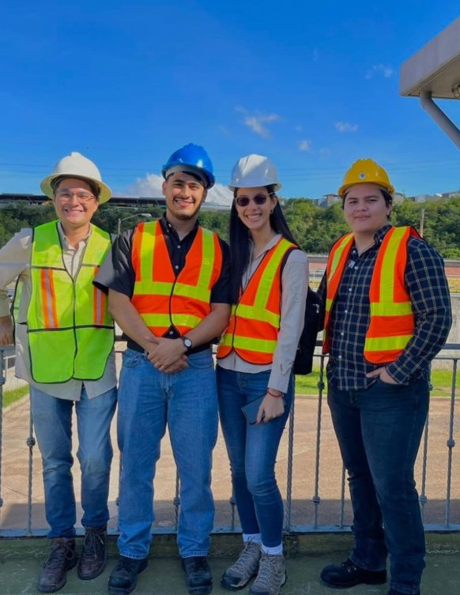
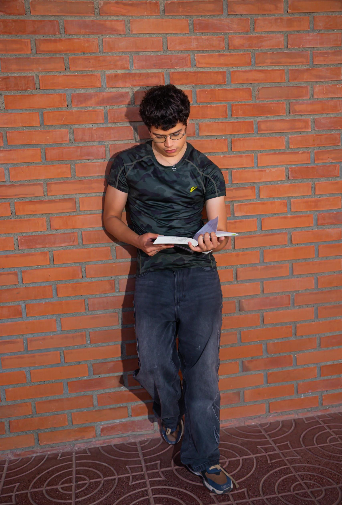
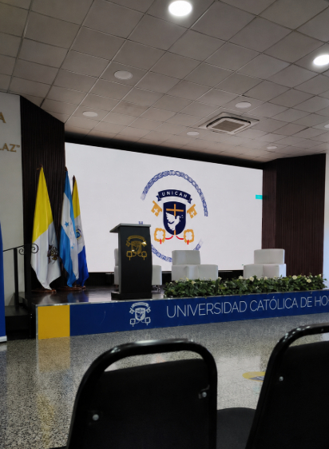
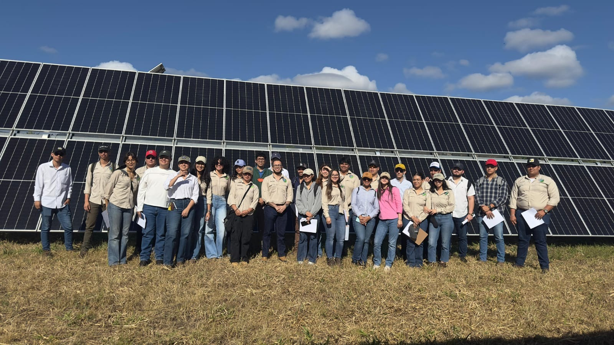

INGENIERÍA AMBIENTAL · UNICAH
INGENIERÍA AMBIENTAL · UNICAH
INGENIERÍA AMBIENTAL · UNICAH
INGENIERÍA AMBIENTAL · UNICAH
Pasa de la preocupación a la acción. Conviértete en el profesional que diseña soluciones sostenibles para nuestras comunidades e industrias.
EXPLORA TU CAMINO AQUÍ ↓Qué estudiarás y por qué esta carrera importa para Honduras.
VER MÁS →
Vida estudiantil, giras de campo y comunidad.
VER MÁS →La malla curricular completa, semestre por semestre.
VER MÁS →
Momentos reales de estudiantes en el campo y el aula.
VER MÁS →Habla con nosotros y resuelve tus dudas.
VER MÁS →
Donaciones, becas y alianzas con empresas que apoyan la carrera.
VER MÁS →
Formamos a quienes Honduras necesita para cuidar su territorio.
Osmer Ponce · Decano, Facultad de Ingeniería Ambiental
Cada punto es una gira de campo real: toca uno para ver qué estudiaron nuestros estudiantes ahí.
Una de las primeras carreras de Ingeniería Ambiental del país
Años formando ingenieros para el territorio hondureño
Egresados trabajando en gestión ambiental en Honduras